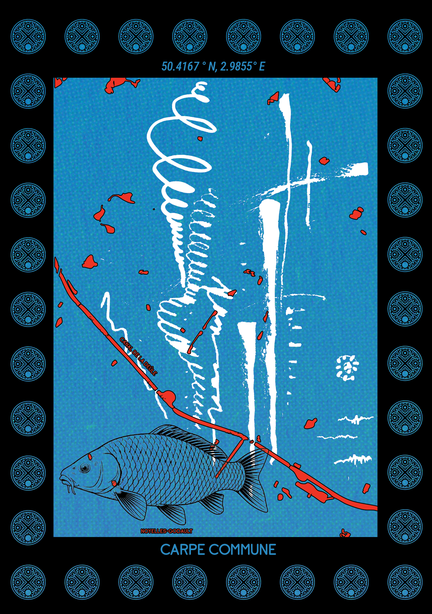
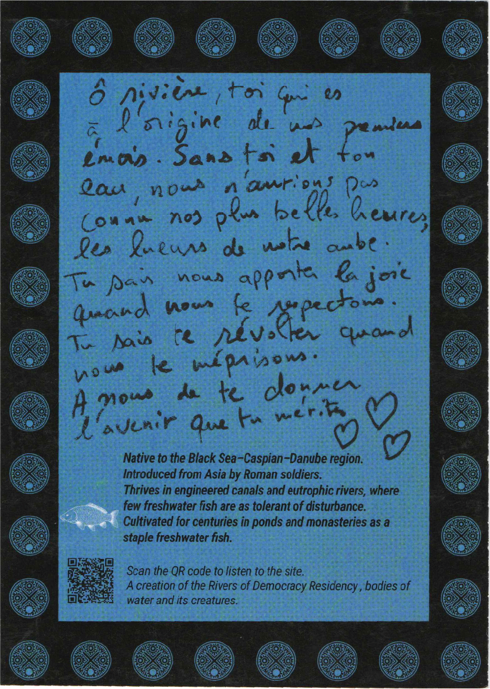
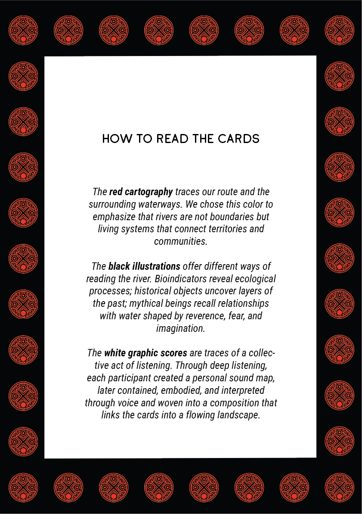
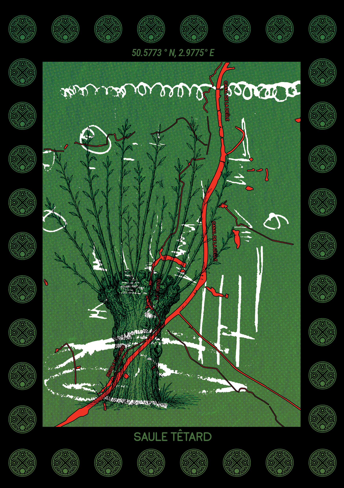

RIveRS OF DEMOCRACY
An interactive card deck mapping northern french rivers and plants, animals, mythical creatures, field recordings and local testimonies as water health indicators.
Rivers, canals, and watery bodies between Douai and Lille, France, exhibited at Fluctuations Festival
July 2026


IN COLLABORATION WITH
Exhibited at Fluctuations Festival, July 2026
Organized and funded by European Alternatives
7 independant artists
TOOLBOX
Local written testimonies
Cartography
Field and underwater recording equipment
Deep listening exercises
Site-specific research on multi-disciplinary bio indicators of the bodies of water
300g glossy paper
Adobe Suite
Water samples correlating to the gps locations on the route of the cartography
Photo documentation
Synthesized musical pieces responding to collective sound scores
Digital illustration work


This set of 16 double-sided cards is both a collectively made archive and an interactive tool. It invites people not only to learn about the rivers and canals of northern France, but also to listen, interpret, respond, and contribute new narratives of their own. The cards were created by seven artists from different disciplines and countries during the Rivers of Democracy residency aboard the Urban Boat, while travelling from Douai to Lille. Along the route we gathered stories, water samples, ecological knowledge, and sounds.




This work is a response to the invitation from European Alternatives for us to connect nature with politics. It starts with the important premise: rivers already participate in our societies. What can we learn from the histories of extraction and resistance they carry? What they teach us in the ways that they connect and divide territories?
For a week in July of 2026, we were generously hosted to sleep, eat, and share crafts on the Urban Boat. We got aboard in Douai and sailed to Lille, where the boat became the main stage for the Fluctuations Festival. There, we exhibited our work, and invited locals to contribute.They were given the prompt "If you could say or ask something to the local rivers, what would it be?". As they listened to our field recordings they wrote their responses, completing our first card deck.